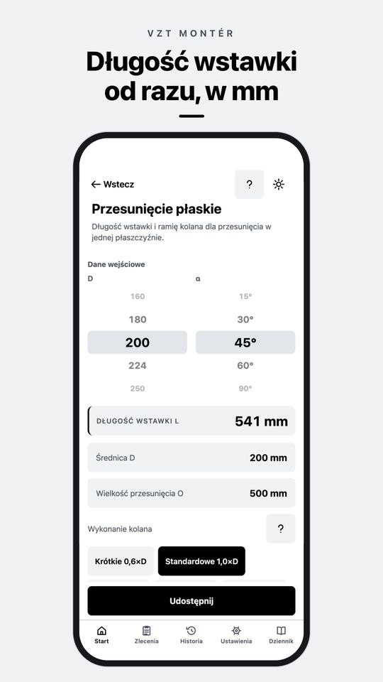
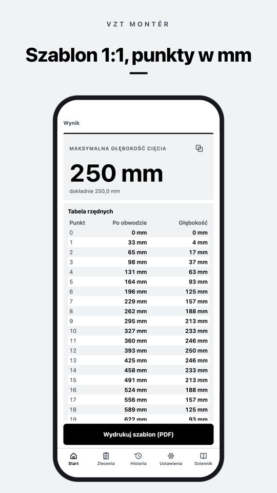
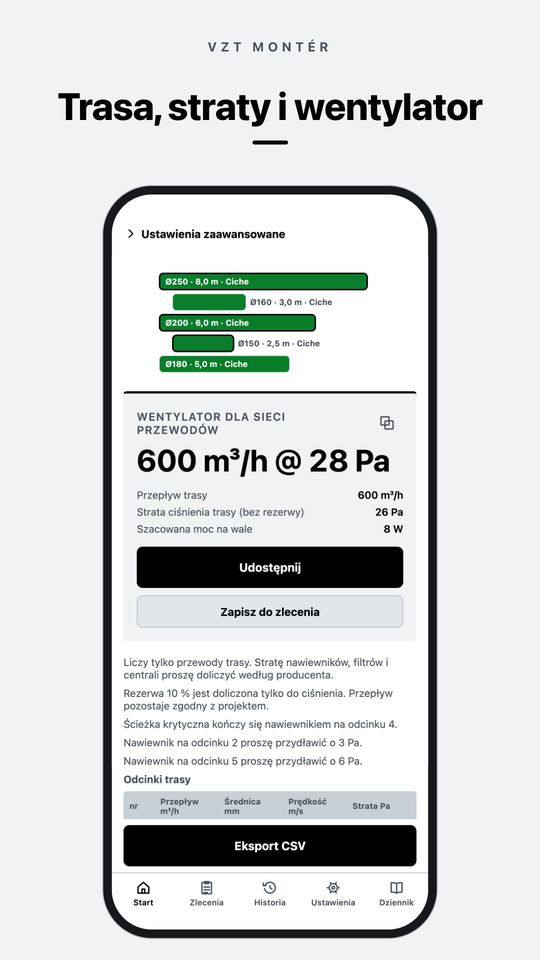
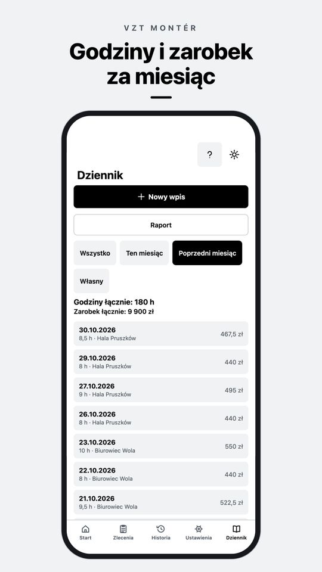

Aplikacja na iPhone i Androida
Przesunięcie, rozwinięcie kolana i przepływ powietrza obliczone prosto na budowie
VZT Montér to kalkulator dla monterów wentylacji. Wystarczy wpisać to, co zmierzono taśmą, a aplikacja poda długość wstawki, szablon rozwinięcia blachy 1:1 albo stratę ciśnienia trasy. Działa offline i bez konta.
Pobranie bezpłatne. PRO to zakup jednorazowy, bez subskrypcji.

Kalkulator wentylacji online
Cztery obliczenia z aplikacji VZT Montér, bezpłatnie w przeglądarce, z tymi samymi wzorami co w aplikacji. Liczby dziesiętne można wpisywać z przecinkiem.
Co potrafi VZT Montér
Wszystko działa w telefonie, bez internetu i bez konta. Obliczenia można zapisać w historii lub w zleceniu.
Przesunięcia Bezpłatnie PRO
Przesunięcie płaskie na przewodzie spiro i przesunięcie kanału prostokątnego dla kolan promieniowych, kątowych i kątowych z łopatkami są bezpłatne. Przesunięcie przestrzenne, wokół przeszkody i własny kąt kolan w PRO.
Cięcie i rozwinięcie PRO
Cięcie ukośne, kolano segmentowe, odgałęzienie (siodło), przejście z okrągłego na prostokątny i redukcja stożkowa. Punkty cięcia w tabeli w pełnych mm i szablon PDF 1:1 na arkuszach A4 z odcinkiem kontrolnym 100 mm.
Przeliczenia Bezpłatnie
Koło na prostokąt, przepływ, prędkość i średnica, najbliższy wymiar spiro i EN 1505, wymagany przepływ powietrza dla pomieszczenia i zamiana przekroju.
Projekt trasy i strat PRO
Odcinki z odgałęzieniami, wymiarowanie, strata ciśnienia, ścieżka krytyczna, dławienie przy każdym nawiewniku, wentylator i zestawienie materiałów.
Szybka kontrola odcinka PRO
Jeden odcinek, od razu wynik: tarcie i kształtki, wentylator, punkt rosy i ryzyko kondensacji.
Zlecenia, oferta i dziennik Bezpłatnie PRO
Obliczenia w zleceniu i protokół PDF, dziennik godzin z zarobkiem za miesiąc. Bezpłatnie 3 zlecenia i 14 dni dziennika. W PRO bez ograniczeń, ze zdjęciami z budowy, raportem PDF godzin i ofertą z cennika.
Tabele Bezpłatnie
Szeregi spiro i kanałów prostokątnych, współczynniki oporów miejscowych, chropowatości, promienie kolan i zalecane prędkości.
Na budowę
Tryb dzienny jest czarno-biały, żeby był czytelny w słońcu, tryb nocny do maszynowni. Duże przyciski do pracy w rękawicach. Po polsku, czesku, słowacku, niemiecku i angielsku.
Jak wygląda aplikacja

Szablon 1:1, punkty w mm 
Trasa, straty i wentylator 
Godziny i zarobek za miesiąc
Bezpłatnie i PRO
Bezpłatnie
Podstawa do każdego zlecenia
- Przesunięcie płaskie i przesunięcie kanału prostokątnego
- Przeliczenia i tabele
- Historia obliczeń
- 3 zlecenia
- Dziennik godzin na 14 dni
- Kopia zapasowa do pliku
VZT Montér PRO
Zakup jednorazowy
- Przesunięcie przestrzenne, wokół przeszkody, własny kąt
- Cięcie i rozwinięcie z szablonem 1:1
- Projekt trasy, straty ciśnienia i wentylator
- Nieograniczone zlecenia, oferta i PDF bez znaku wodnego
- Dziennik bez ograniczeń, zdjęcia i raport PDF godzin
Płatność raz, nic się nie odnawia. Cenę w lokalnej walucie pokaże sklep.
Częste pytania
Jak oblicza się długość wstawki przy przesunięciu?
Z przesunięcia O i kąta kolan α wynika przekątna C = O / sin α, od której odejmuje się dwa ramiona kolan R · tan(α/2). Na przykład Ø200 mm, przesunięcie 500 mm i kolana 45° o standardowym promieniu 1,0×D dają wstawkę 541 mm.
Czy aplikacja działa bez internetu?
Tak. Obliczenia, zlecenia i dziennik działają w telefonie. Internet jest potrzebny tylko do zakupu i przywrócenia PRO.
Czy PRO to subskrypcja?
Nie. PRO to zakup jednorazowy, ważny na zawsze. Na nowym telefonie przywraca się go w Ustawieniach.
Gdzie są moje dane?
Tylko w telefonie, konto nie jest potrzebne. Kopię zapasową zapisuje się do pliku i przenosi, gdzie trzeba. Szczegóły w polityce prywatności (po angielsku).
Na jakich telefonach i w jakich językach?
iPhone i telefony z Androidem. Aplikacja jest po polsku, czesku, słowacku, niemiecku i angielsku.
Wynik nie zgadza się z praktyką. Co zrobić?
Prosimy napisać na info@deriverge.com wpisane wartości i otrzymany wynik. Sprawdzimy obliczenie. Więcej odpowiedzi w pomocy (po angielsku).
Pobierz VZT Montér
Bezpłatnie na iPhone i Androida. PRO jednorazowo, bez subskrypcji.